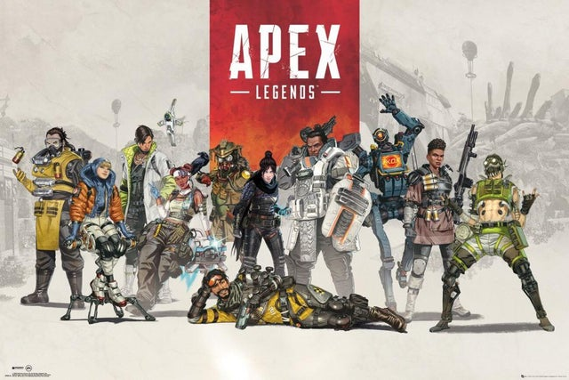
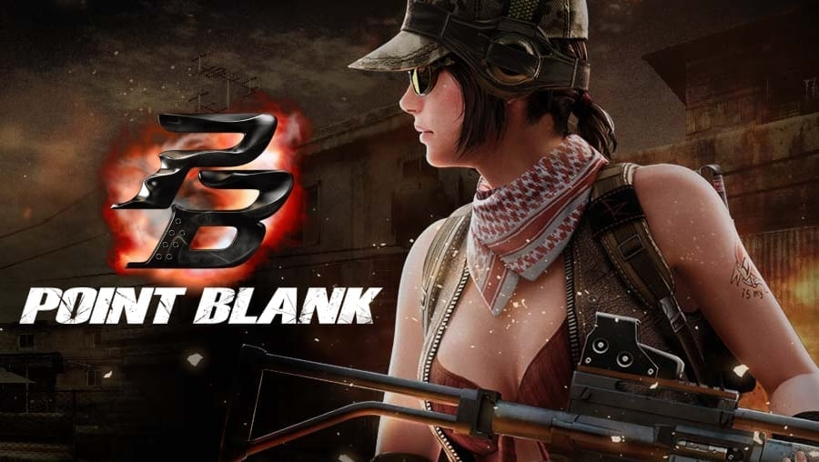

Content
Games
Apex Legends
Apex Legends is a free-to-play battle royale-hero shooter game developed by Respawn Entertainment and published by Electronic Arts. It was released for Microsoft Windows, PlayStation 4, and Xbox One in February 2019, and for Nintendo Switch in March 2021. A mobile version of the game specially designed for touchscreens titled Apex Legends Mobile has also been announced which is scheduled to be fully released by 2022 on Android and iOS, as well as a native version of the game for Xbox Series X and Series S, and PlayStation 5. The game supports cross-platform play. Before the match, players form into two- or three-player squads, and select from pre-designed characters with distinctive abilities, known as "Legends". The game has two gameplay modes. In "Battle Royale", up to 20 three-person squads or 30 two-person duos land on an island and search for weapons and supplies before attempting to defeat all other players in combat. The available play area on the island shrinks over time, forcing players to keep moving or else find themselves outside the play area which can be fatal. The final team alive wins the round. In "Arenas", players form into three-player squads and fight against another squad in a 3v3 team deathmatch over a series of rounds to determine the winner of the match. Teams win when their team has at least 3 points and is 2 points ahead. Apex Legends is set in the same science fiction universe as Respawn Entertainment's Titanfall series, with several characters from the Titanfall series appearing either as minor characters or playable Legends. Work on the game began around late 2016, though the project remained a secret right up until its launch. The game's release in 2019 came as a surprise, as until that point it had been assumed that Respawn Entertainment was working on a third installment to the Titanfall franchise, the studio's previous major game. Apex Legends received generally positive reviews from critics, who praised its gameplay, progression system, and fusion of elements from various genres. Some considered it a worthy competitor to other battle royale games. Apex Legends surpassed 25 million players by the end of its first week, and 50 million within its first month. By April 2021, it had approximately 100 million players making it one of the most played video games of all time by player count.
Point Blank
Point Blank is a first-person shooter game developed by Zepetto and published by NCsoft in October 2009, and was released in Russia on December 4, 2009. In 2010, together with the FCS, Point Blank became an esports discipline and is still actively developing in this direction. The game is built on the Free-to-play model - there is no subscription fee for access to the game, game bonuses are given to the player for real money.
Anime
Hellsing Ultimate

Hellsing (stylized as HELLSING) is a Japanese manga series written and illustrated by Kouta Hirano. It was serialized in Young King OURs from May 1997 to September 2008. The series chronicles the efforts of the mysterious and secret Hellsing Organization as it combats vampires, ghouls, and other supernatural foes who threaten England. The individual chapters were subsequently collected and published in 10 tankōbon volumes by Shōnen Gahōsha. The series was licensed for English language release in North America by Dark Horse Comics. From 2001 to 2009, Hirano released a 6-chapter prequel series, Hellsing: The Dawn, in special editions of Young King OURs. A 13-episode anime television series adaptation by Gonzo, directed by Umanosuke Iida and Yasunori Urata with screenplay by Chiaki J. Konaka, was broadcast on Japan's Fuji Television from October 2001 to January 2002. An original video animation (OVA), titled Hellsing Ultimate, was produced by Geneon. It followed the manga storyline more closely than the anime series.[4] The series spanned 10 episodes, released in Japan between February 2006 and December 2012. In North America the series was first licensed by Geneon Entertainment and later by Funimation and launched from December 2006 to October 2014. It was broadcast on Adult Swim's Toonami programming block in 2014.
Grandmaster of Demonic Cultination
Mo Dao Zu Shi (Chinese: 魔道祖师; pinyin: Mó Dào Zǔ Shī; lit. 'Demonic Way Ancestral Master') is a donghua series based on the novel of the same name written by Mo Xiang Tong Xiu (Chinese: 墨香铜臭). It is produced by Tencent Penguin Pictures and B.C May Pictures. The series depicts a fictional Xianxia world where humans attempt to cultivate to a state of immortality known as Xian (Chinese: 仙). The protagonist of the series, Wei Wuxian, due to certain circumstances, deviated from the conventional cultivation path to Xian, and eventually created Mo Dao (the Demonic Path). The first season, titled Qian Chen Pian (Chinese: 前尘篇), aired from July 9 to October 6, 2018 on Tencent Video for 15 episodes. The second season, titled Xian Yun Pian (Chinese: 羡云篇), aired from August 3 to August 31, 2019 for 8 episodes. A chibi series, titled Mo Dao Zu Shi Q, aired from July 31, 2020 to January 29, 2021 and ran for 30 episodes. The third and final season, titled Wán Jié Piān (Chinese: 完结篇), aired from August 7 to October 16, 2021 for 12 episodes.